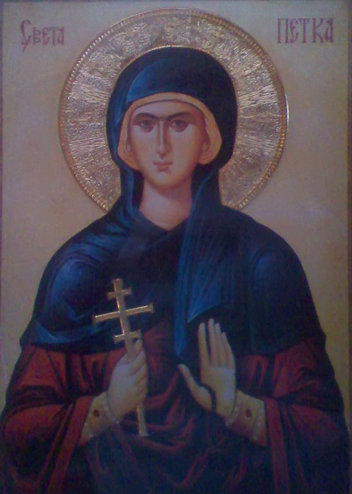
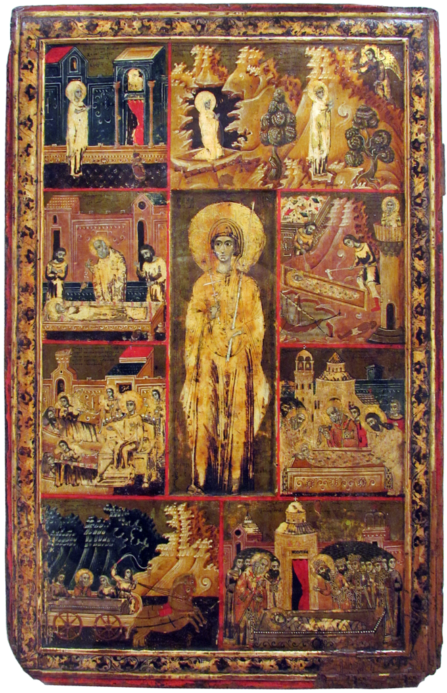

Историјат Xрама Свете Петке
Нову Пазову су, између 1790. и 1794. године, основале 62 немачке породице, евангелистичке вероисповести, а овде су их населиле граничарске војне власти. Број новопазовачких мештана непрекидно је растао до почетка Другог светског рата, а нагли пад, настао након исељавања Немаца, ублажен је доласком колониста. С временом, место је урбанизовано, тако да сада представља типично приградско насеље, у ком је, до краја 20.века, бележен непрекидно раст броја становника. Име велике светитељке, Св. Петке је прво прослављано као слава мањег храма у центру Нове Пазове који је благословом Епископа сремског Господина Василија преименован у храм Преподобног Сисоја Великог. На празник Материца, 2003.године, освећено је земљиште на ком ће, 2004.године, почети изградња новог храма Преподобне мати Параскеве- Свете Петке, по узору на храм Лазарицу из Лазарева, код Бања Луке. Груби грађевински радови завршени су 2007.године. Над пливајућимтемељима, средствима из буџета општине Стара Пазова, као и добровољним прилозима верника, подигнуто је велелепно здање, зидова видоких преко седам метара, са звоником од 45,5 метара и куполом високом 29 метара. У храму су похрањени и делић моштију Св. Петке као и риза из Јашија, у којој су биле положене мошти Св. Петке.

О светитељки
Светитељка је име Петка добила (од Срба) по дану у недељи - петку.[1] Родила се у тадашњем селу Епивату,[2] код тадашњег града Калистратије, који се налази на обали Мраморног мора између Силимврије и Цариграда, у Тракији половином 10. века. Потицала је из имућне и побожне породице. Имала је брата, који се звао Јевтимије, и који се замонашио веома млад, да би касније постао епископ Мадитски (989—996) и светитељ у граду Мадиту код Галипоља.[3] Још као девојчица, док је са мајком одлазила у цркву, она је била веома побожна. Након смрти својих родитеља, жељна подвижничког живота, она напусти родитељски дом и оде у Цариград, где се замонаши у цркви Свете Софије и добије име "Параскева",[4] а затим се запути у Јорданску пустињу, живећи строгим аскетским животом, где се ради Христа подвизавала све до своје старости. У доба позне старости, сањала је анђела који јој је рекао да напусти пустињу и врати се у свој родни град, Епиват.[5] После повратка, поживела је још две године. Верници су је сахранили по хришћанским обичајима, али не на градском гробљу већ издвојено од других. По другом, бугарском извору, она је била сахрањена непримерено поред једног столара, па након тога и једног морнара, чија су телеса грозно мирисала. Због те непријатности силом прилика откопани су гробови и тада је откривено њено "нетрулежно тело", али није дирано. Тек када су нека Ефимија и неки Ђорђе, независно једно од другог, сањали исти сан о њеној светости и добили наредбу да је одатле изваде, народ је откопао гроб и њене мошти пренео у храм, где су најпре чуване.[4] Богоугодни хришћани из тог места после јављања светитељке у сну неком Георгију и Јефимији пронашли су место где су биле закопане њене мошти, извадили су их из земље и положили у храм светог Петра и Павла у Епивату. Њене чудотворне мошти преношене су у току времена много пута. Најпре у Цариград, па одатле их бугарски цар Јован Асен 1238. године пренесе у Трново. Из Трнова након његовог пада (1393) су се мошти селиле преко Видина, до Бруса (1396)[6] - биле пренете у Влашку, након пада Бугарске под Османлије. Када је и Влашка постала угрожена турским упадима, а на молбу српске кнегиње Милице султану Бајазиту, мошти су пренете у Србију 1398. године, у средњовековни град Жупањевац. Одатле су око 1400. пренете у манастир Љубостињу,[7] па су коначно 1417. пренете у Београд. Кад је Сулејман I 1521. године освојио Београд, он уз остале драгоцености преноси у Цариград и мошти св. Петке, заједно са протераним Србима Београђанима. На молбу и трошком молдавског господара Василија Арбанаса званог Лупула 1641. године мошти су пренете у град Јаши, где се и данас налазе (осим два прста шаке, који су у капели свете Петке на Калемегдану). Молдавски кнез је да би спасао мошти светице, наводно 1632. године исплатио дугове Светог гроба у Јерусалиму (за 42.000 мађарских златника) а 1641. године и дуг Васељенске патријаршије, и још подмитио Турке у Цариграду са 390 кеса дуката.[8] Широм Србије налази се и велики број извора, који су посвећени св. Петки. Један од њих је извор св. Петке у калемегданској тврђави у Београду, где су њене мошти дуго времена почивале.

Петковдан
Српска православна црква је слави 14. октобра по старом, односно 27. октобра по новом календару.[9] Свету Параскеву српски народ обично зове Света Петка, а у српским приморским крајевима Петка Биоградска, јер су јој мошти почивале такође и у Београду. Такође је позната и као Петка Трнова, јер су јој мошти биле у Трнову али и српској Трн-паланки о чему постоје записи.[10] Пренос моштију свете Петке слави се 8. августа, када се истовремено обележава и дан Свете мученице Параскеве Римске. Заједнички празник обележава се као Света Петка Трнова. У српском православном црквеном календару су 1900. године биле три светитељке истог имена: "Преподобна мати Параскева – Света Петка!" (14. октобра, по старом), "Мученица Параскева Римска" (26. јула) и "Великомученица Параскева" (28. октобра). Сада их има само две – јесења, права Света Петка Епиватска и летња – мученица.[3] Тај факат је уносио забуну, јер су то три различите особе, свете жене из различитих периода хришћанске историје. Тако се јавља из 13. века "Служба светитељки Параскеви - Петки српској" са 120 правила, која се односи на Параскеву из Епидаура тј. нашег Дубровника, такође из 10. века, у време српског краља Хранимира.[4][11] Света Петка се по броју свечара налази на шестом месту на листи највећих српских слава. Култ Свете Петке је веома развијен међу Србима, па је Петковица као јача слава раширена у више крајева, а највише у источној Србији и Далмацији. У Лужници и Нишави је Петковача прва општа јесења слава. У Шумадијској епархији Свету Петку слави око 3.500 свечарских домова.[12]
